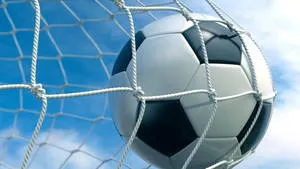
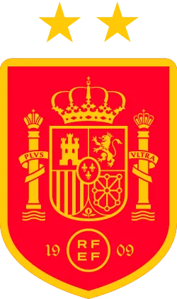
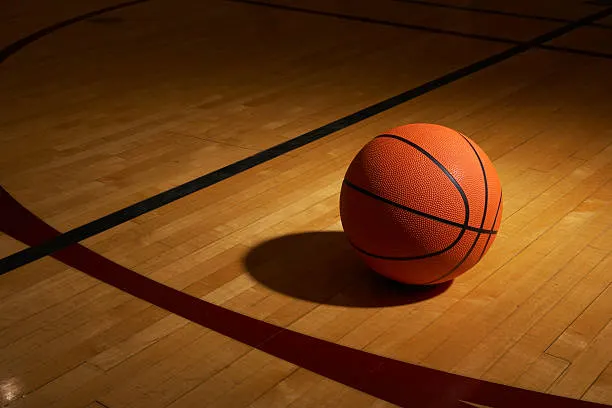
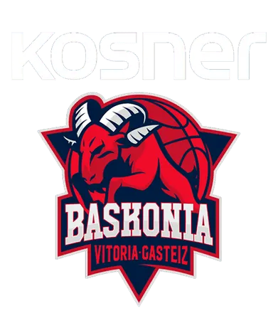
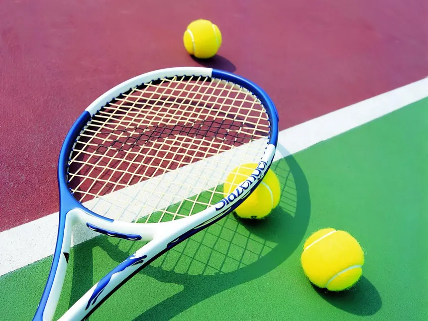
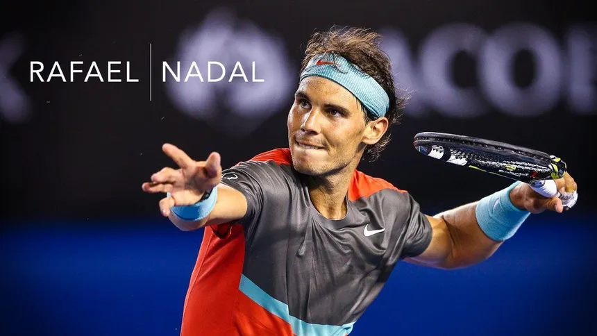
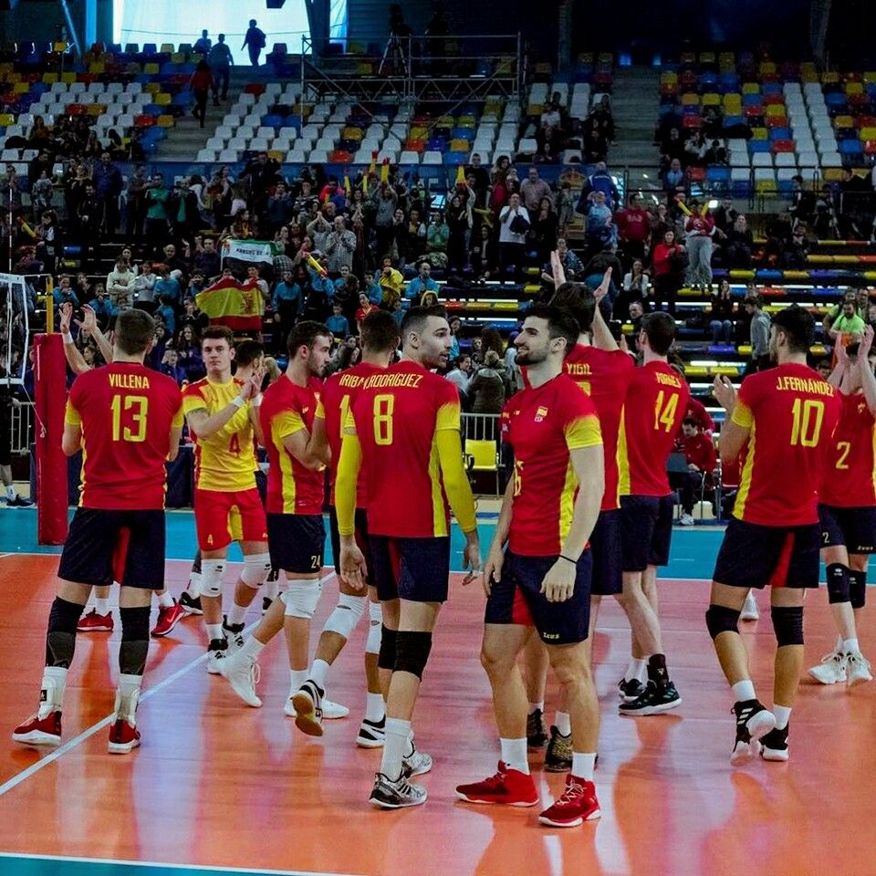
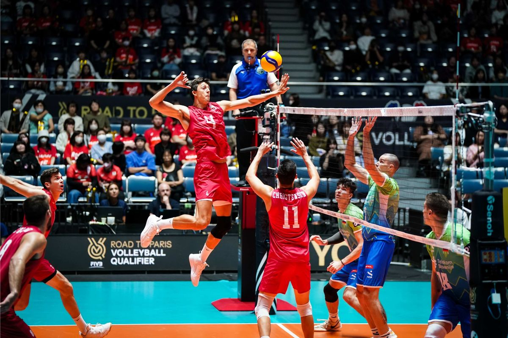
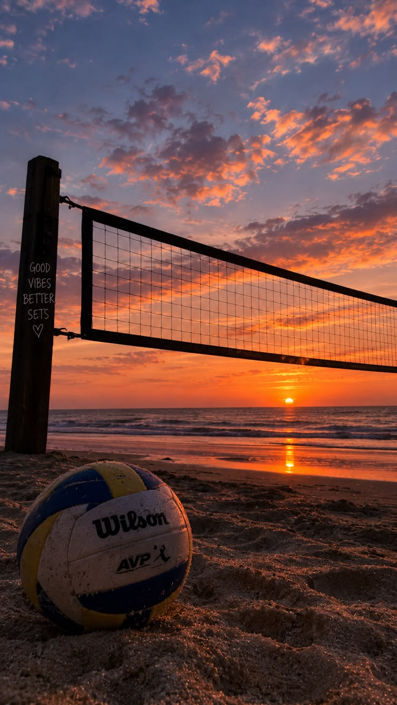

Football (Soccer)
Football is one of the most popular
sports in the world. Two teams of
eleven players compete to score
goals by sending a ball into
the opposing team's goal.

A standard match consists of
two 45-minute halves, separated
by a halftime break. Additional
time may be added to compensate
for interruptions.
Players use passing, movement
and teamwork to create opportunities.
Different positions include
goalkeepers, defenders,
midfielders and forwards.
Major international competitions
include the FIFA World Cup,
while domestic leagues are
organized in many countries.

Basketball
Basketball is a fast-paced team
sport in which two teams attempt
to score by throwing a ball
through the opponent's hoop.

Each team normally has five
players on the court. A successful
field goal is worth two or three
points, depending on the shooting
position. Free throws are worth
one point.

Basketball requires accurate
passing, dribbling, shooting,
defending and quick decisions.
Players constantly switch
between attacking and defending.
Professional basketball is
especially well known through
competitions such as the NBA
and international tournaments.
Tennis
Tennis is a racket sport played
individually or in pairs.
Players hit a ball over a net,
attempting to make it land
inside the opponent's court.

Matches are divided into games
and sets. The traditional point
sequence is love, fifteen,
thirty and forty, followed
by game point when the required
conditions are met.
Tennis requires coordination,
movement, precision and
concentration. Players use
different strokes, including
serves, forehands, backhands
and volleys.

Important international tournaments
include Wimbledon, Roland-Garros,
the Australian Open and
the US Open.
Volleyball
Volleyball is a team sport
played by two teams separated
by a net. The objective is
to send the ball over the net
so that it lands inside
the opponent's court.

Indoor volleyball normally
involves six players per team.
Teams are generally allowed
up to three touches before
returning the ball.

Common techniques include
serving, passing, setting,
attacking and blocking.
Successful teams depend on
communication and cooperation.
Volleyball can be played
indoors or on the beach.
Beach volleyball is usually
played by teams of two players.
